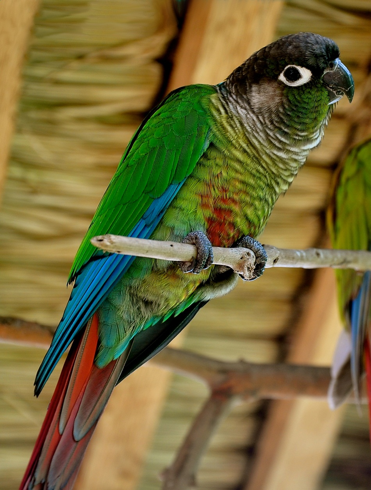

About Me
:O hi
I am not sure what to say. I sweets, like a lot. Although, I do get kind of tired of them, especially if I eat too many :(. I am a 2nd year computer science major. I be wanting to throw myself off my bed because my head be thinking too much. Too much info aaaahhhhhhhhhhhh. Anyways, I like birds. I actually have a green cheek conure, so beautiful (I'll add a pic. FYI, it is not a picture of my bird, but how my bird looks like). Thank you for reading my ted talk :)
